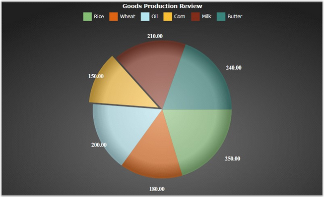
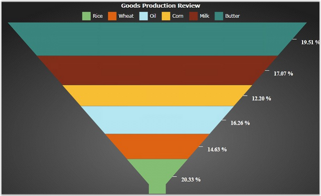

Chart Segment Labels can be used to customize the Pie, Adornment, Pyramid, and Funnel chart types. You can set the position of the segment label and connector template in Chart.
The following table lists the properties that can be used to customize the Chart Segment Labels.
|
Property |
Default Value |
Description |
|
SegmentHorizonatalAlignment |
Center |
This property is used to set the horizontal alignment for the Chart Series segments. |
|
SegementVerticalAlignment |
Center |
This property is used to set the vertical alignment for the Chart Series segments. |
|
SegmentShowLine |
False |
This property indicates whether the line is drawn from the series segment to the segment label. |
|
SegmentIsOut |
False |
This property is used to set the label rendered inside or outside the chart. |
|
ConnectorTemplate |
Null |
The SegmentShowLine and SegmentIsOut properties must be set to true to write custom connector templates. |
The following code example illustrates how to use Chart Segment Labels.
|
[XAML]
<syncfusion:ChartSeries Type="Pie" syncfusion:ChartDoughnutType.DoughnutCoefficient="0.5" Stroke="Transparent" DataSource="{StaticResource goods}" BindingPathX="ProductName" BindingPathsY="Production" > <syncfusion:ChartSeries.AdornmentsInfo> <syncfusion:ChartAdornmentInfo Visible="True" SegmentLabelContent="YValue" SegmentLabelFontSize="13" SegmentLabelFontWeight="Bold" SegmentVerticalAlignment="Top" SegmentHorizontalAlignment="Center" SegmentIsOut="True"> <syncfusion:ChartAdornmentInfo.LabelTemplate> <DataTemplate> <TextBlock Text="{Binding Path=Content, RelativeSource={RelativeSource TemplatedParent}}" Foreground="White"/> </DataTemplate> </syncfusion:ChartAdornmentInfo.LabelTemplate> </syncfusion:ChartAdornmentInfo> </syncfusion:ChartSeries.AdornmentsInfo> </syncfusion:ChartSeries> |
|
[C#]
// Create instance for the Chart and Chart Area. Chart chart = new Chart(); ChartArea area = new ChartArea(); chart.Areas.Add(area);
// Create instance for the Chart Series. ChartSeries series = new ChartSeries(); series.Type = ChartTypes.Pie; ChartAdornmentInfo adornment = new ChartAdornmentInfo(); adornment.SegmentLabelContent = LabelContent.YValue; adornment.SegmentHorizontalAlignment = HorizontalAlignment.Center; adornment.SegmentVerticalAlignment = VerticalAlignment.Center; adornment.SegmentIsOut = true; adornment.LabelTemplate = this.Resources["segmenttemplate"] as DataTemplate;
// Assign the Adornment information to Series. series.AdornmentsInfo = adornment; |

Figure 71: Segment Label Customization
Connector Lines can be drawn between segments and segment labels by using the ConnectorTemplate property. The SegmentShowLine property must be set to true to view the segment lines.
The following code example illustrates how to use Connector Templates in Chart.
|
[XAML]
<syncfusion:ChartSeries Type="Pie" syncfusion:ChartDoughnutType.DoughnutCoefficient="0.5" Stroke="Transparent" DataSource="{StaticResource goods}" BindingPathX="ProductName" BindingPathsY="Production" > <syncfusion:ChartSeries.AdornmentsInfo> <syncfusion:ChartAdornmentInfo Visible="True" SegmentLabelContent="Percentage" SegmentLabelFontSize="13" SegmentLabelFontWeight="Bold" SegmentVerticalAlignment="Center" SegmentHorizontalAlignment="Right" SegmentShowLine="True" SegmentIsOut="True"> <syncfusion:ChartAdornmentInfo.LabelTemplate> <DataTemplate> <TextBlock Text="{Binding Path=Content, RelativeSource={RelativeSource TemplatedParent}}" Foreground="White"/> </DataTemplate> </syncfusion:ChartAdornmentInfo.LabelTemplate> <syncfusion:ChartAdornmentInfo.ConnectorTemplate> <DataTemplate> <Line X1="0" Y1="0" X2="10" Y2="0" Stroke="White" StrokeThickness="1"/> </DataTemplate> </syncfusion:ChartAdornmentInfo.ConnectorTemplate> </syncfusion:ChartAdornmentInfo> </syncfusion:ChartSeries.AdornmentsInfo> </syncfusion:ChartSeries> |
|
[C#]
// Initialize the Chart, Chart Area and Chart Series. Chart chart = new Chart(); ChartArea area = new ChartArea();
ChartSeries series = new ChartSeries(); series.Type = ChartTypes.Funnel;
ChartAdornmentInfo adornment = new ChartAdornmentInfo(); adornment.Visible = true; adornment.SegmentHorizontalAlignment = HorizontalAlignment.Right; adornment.SegmentIsOut = true;
// Initialize the Segment Line visibility and Connector Template. adornment.SegmentShowLine = true; adornment.ConnectorTemplate = this.Resources["connectortemplate"] as DataTemplate; series.AdornmentsInfo = adornment; area.Series.Add(series); chart.Areas.Add(area); |

Figure 72: Connector Template